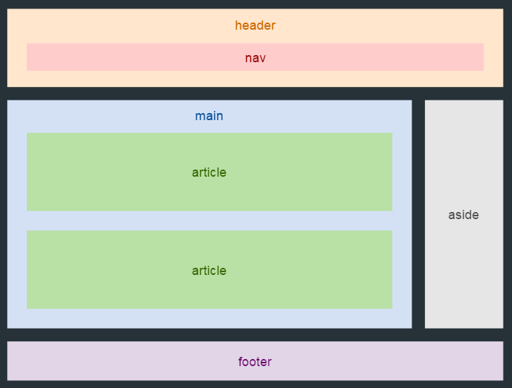
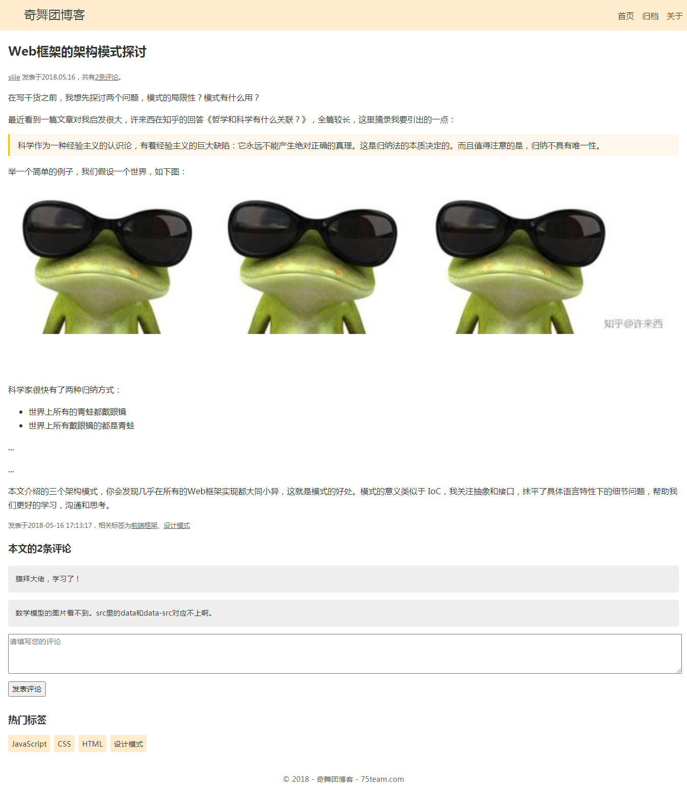
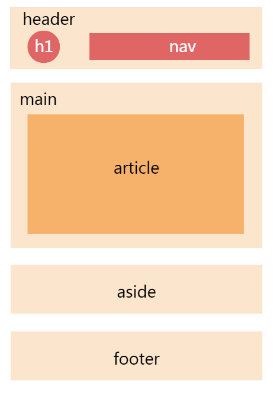

● 常用行内级元素：<span>、<strong>、<a>、<img>、<label>、<input>、<button>、<select>、<textarea>、<video>、<b>、<i>
● 常用块级元素：<div>、<hx>、<p>、<ul>、<ol>、<li>、<dl>、<dt>、<dd><form>、<header>、<nav>、<article>、<section>、<aside>、<footer>、<table>、<th>、<tr>、<td>、<canvas>
● 常见行内块级元素：<img>（替换元素）、<input> （替换元素）
标题：
<title>
<h?>
段落：
<p>
列表：
<ul><li>
<ol><li>
<dl><dt><dd>
强调：
<em>
<strong>
<i>斜体表示术语、分类
<b>粗体表示关键字
<u>下划线
引用：
<q>
<blockquote>
缩略语：
<abbr>
地址：
<address>
上标下标：
<sup><sub>
代码：
<code>
<pre>
<var>
<kdb>
<samp>
<time datetime="">
超链接：
<a>
空元素：
<figure><img srcset sizes alt title width height><figcaption>
<br>
<hr>
音视频：
<video controls width height autoplay loop muted poster="poster.png"><source src type> <source src="rabbit320.webm" type="video/webm">
<audio controls><source src type>
<track label kind src srclang>
嵌入技术：
<iframe width height src="https://www.youtube.com/embed/QH2-TGUlwu4" frameborder="0" allowfullscreen>
</iframe>
网站架构：
<header>
<nav>
<main><article><section><div> <aside>
<footer>
表格
<table>
<caption>
<colgrpup><col>
<tr rowspan colspan><th scope="colgroup、rowgroup、col、row"><td>
<thead><tfoot><tbody>
表单：
<form>
<fieldset><legend>
<label for="">
<input type="text、email、password、search、checkbox、radio" value="默认值">
<textarea>
<button type="submit、reset、button">
<select><option>
<datalist><option>
<datalist><select><option>
无语义：
<div>（部分）块级
<span>（范围）行级
网页总体结构：



用什么标签？

HTML5 的新特性
1、语义化标签： <header></header><nav></nav>等
2、绘画canvas
3、SVG绘图
4、视频和音频，用于媒介的 video 和 audio 元素
5、input 增强型表单控件：calendar, date, time, email, url, search
6、本地离线存储 localStorage 长期存储数据，浏览器关闭后数据不丢失；
sessionStorage 的数据在浏览器关闭后自动删除
7、新的技术 webworker , websocktGeolocation
HTML5 移除的元素
纯表现的元素：basefont,big,center,font,s,strike,tt,u;
对可用性产生负面影响的元素：frame,frameset,noframes;